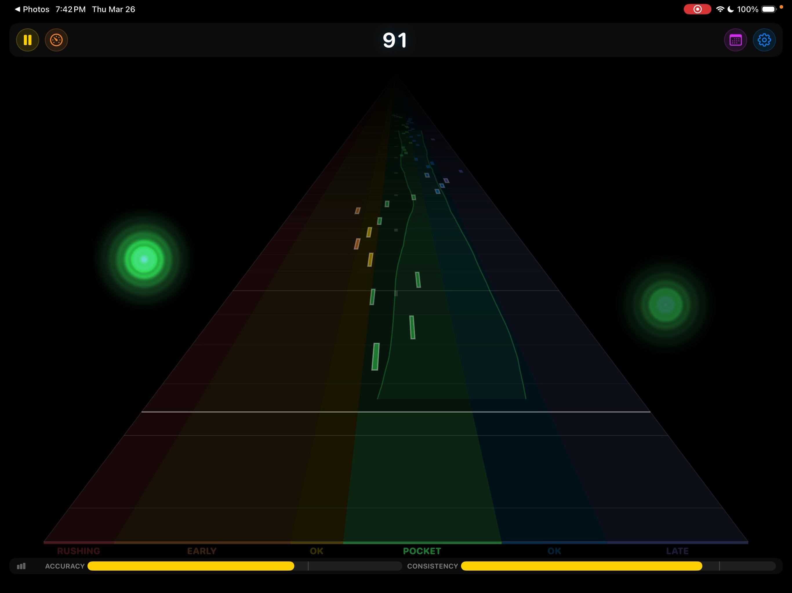
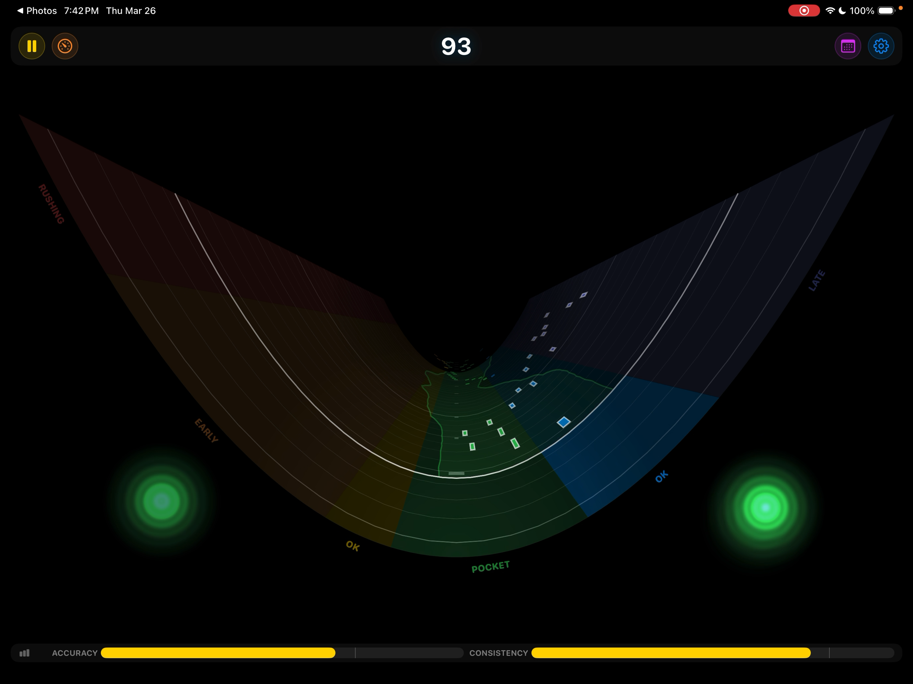
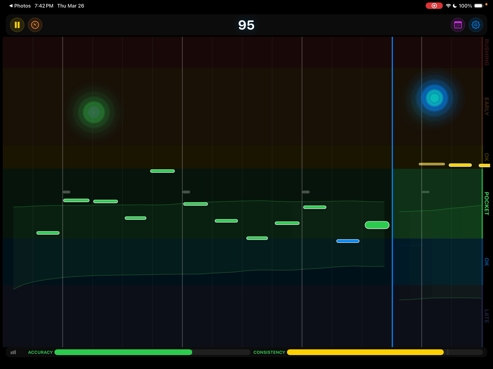
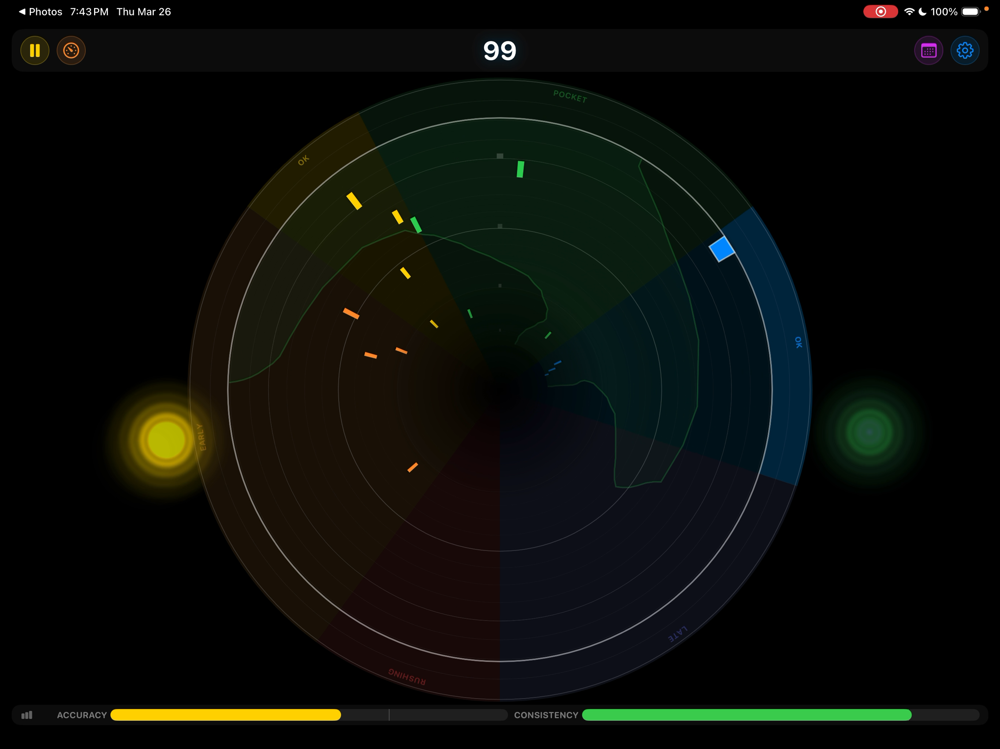
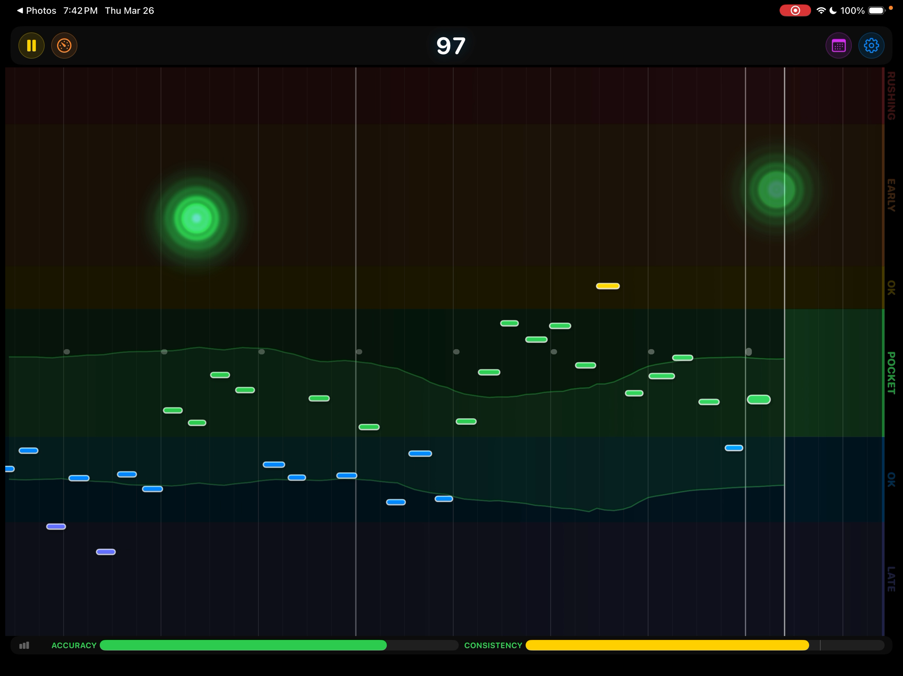
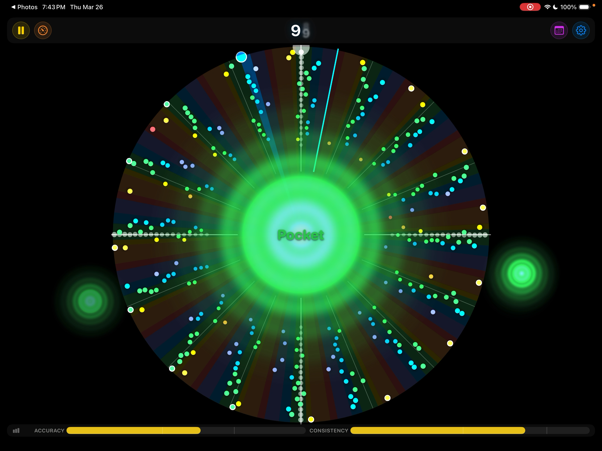

The metronome that listens back.
Metronome Hero scores the hits and note attacks you play, shows where you land relative to the beat, and can automatically adjust the tempo to help you improve.






Note Highway